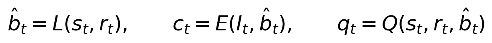
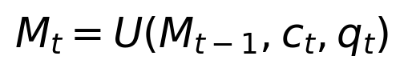
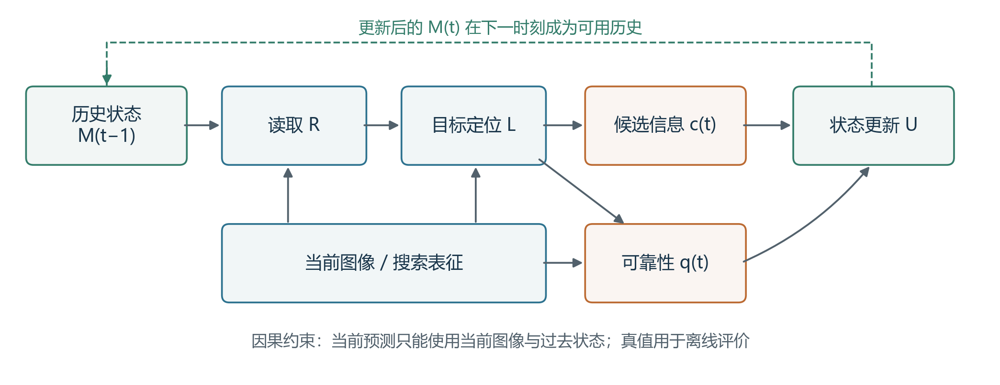
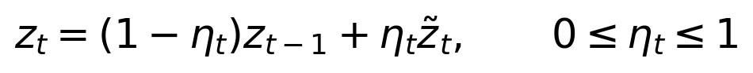
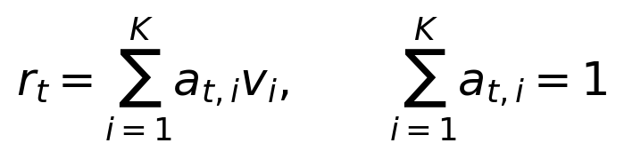
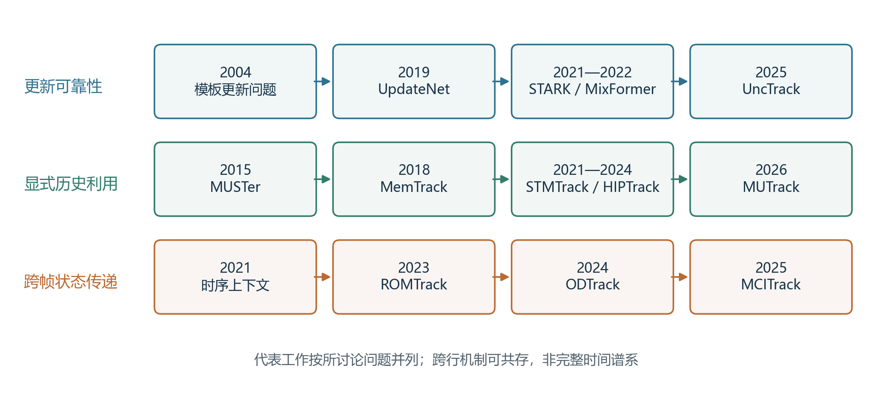
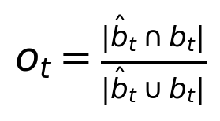

Template Updating and Memory Mechanisms in Visual Single-Object Tracking: A Survey
阅读初稿 v1.0｜2026年10月25日 本稿采用文献分析与已发表结果整理，未实施统一环境下的算法复现实验。表中数值均注明原始出处；本文归纳的分析框架、示意图和讨论不代表提出了新的跟踪算法。作者、单位与基金信息由实际作者确定，未在此代填。
视觉单目标跟踪需要依据首帧提供的目标信息，在连续视频中维持实例身份并估计目标位置。目标形变、视角变化、遮挡和相似物干扰使固定外观表征逐渐失配，而依赖自身预测进行更新又可能引入错误观测并造成累积漂移。模板更新与记忆机制因此成为连接瞬时观测和长期目标表征的重要环节。围绕外观适应性、身份稳定性与计算成本之间的关系，本文对相关研究进行综述。首先，区分模板、历史样本、记忆状态与模型参数，建立涵盖候选生成、可靠性判断、记忆写入、容量管理和历史读取的分析框架；其次，从更新时机、融合算子和污染抑制分析模板更新方法，并从记忆内容、时间组织、样本选择与读取方式比较显式记忆和隐式状态传播方法；进一步，梳理常用跟踪基准与评价协议，结合可追溯的公开报告值和原文消融结果讨论方法差异。文献证据表明，历史信息的有效性取决于观测可靠性、信息互补性与读取机制的协同，增加历史数量或提高更新频率并不构成普遍有效的策略。最后，讨论更新价值估计、污染记忆修复、资源约束下的历史压缩以及可解释评测等问题，为跟踪方法设计和实验分析提供参考。
关键词：视觉单目标跟踪；模板更新；时序记忆；外观建模；跟踪漂移；可靠性评估
Visual single-object tracking maintains the identity of a target and estimates its location throughout a video given an initial bounding box. Deformation, viewpoint changes, occlusion, and similar-looking distractors can make a fixed appearance representation inadequate. Conversely, updating the representation using the tracker's own predictions may introduce erroneous observations and accumulate drift. This survey examines template updating and memory mechanisms through the trade-offs among appearance adaptation, identity preservation, and computational cost. It first distinguishes templates, historical samples, memory states, and model parameters, and develops an analytical framework covering candidate generation, reliability assessment, memory writing, capacity management, and retrieval. Template updating methods are then compared in terms of update timing, fusion operators, and contamination control. Explicit memory and implicit state propagation are discussed according to their stored content, temporal organization, sample selection, and reading mechanisms. Common benchmarks and evaluation protocols are reviewed, followed by an analysis of traceable published results and within-paper ablations. The available evidence indicates that the utility of history depends on observation reliability, complementary information, and the retrieval mechanism; neither a larger memory nor more frequent updating is universally beneficial. The survey concludes with challenges in estimating update utility, repairing contaminated memory, compressing history under resource constraints, and designing interpretable evaluations. The quantitative evidence in this article is compiled from published sources rather than newly conducted benchmark experiments.
Keywords: visual single-object tracking; template updating; temporal memory; appearance modeling; tracking drift; reliability assessment
视觉单目标跟踪以视频首帧中的目标标注为起点，逐帧预测同一实例的位置与范围。与识别图像中某一类别的目标不同，跟踪必须持续回答“当前候选是否仍是最初指定的那个对象”。当目标发生姿态变化或与相似对象交会时，类别语义保持一致并不足以保证实例身份正确。因此，跟踪系统不仅需要区分目标与背景，还需要决定目标表征应如何随时间改变。
模板更新问题具有长期研究基础。Matthews等[1]在图像对齐背景下分析了朴素模板替换导致的漂移问题；Salti等[2]进一步从外观模型自适应角度建立概念框架并开展评价。这些工作说明，适应变化与抵抗错误之间的矛盾并非由深度网络产生。随着特征学习和关系建模的发展，该矛盾逐步体现在动态图像模板、历史特征库、前景提示、原型表示及跨帧隐状态等不同载体中。载体改变了信息的保存和调用方式，却没有消除“当前观测是否可信”的基本问题。
单纯保留首帧模板可以避免后续错误样本直接改变目标表示，但当可见部位、尺度和成像条件明显变化时，初始表征可能缺少必要的适应性。相反，频繁替换模板能够迅速吸收新外观，却容易将遮挡物、背景或相似实例写入表征。更复杂的记忆系统保存多个历史状态，为多视角和非连续外观提供了支持，同时引入容量管理、冗余压缩、错误淘汰和读取选择等问题。因而，模板更新和记忆机制宜作为同一信息处理过程的不同环节加以分析。
现有综述分别从实验比较、网络架构和评测体系等角度总结视觉跟踪。Smeulders等[3]强调复杂条件下的实验评价，孙子文等[4]按照Transformer结构讨论方法演进，胡世宇等[5]系统分析单目标跟踪中的视觉智能评估，Chen等[6]覆盖传统与深度跟踪方法及其挑战。它们为理解领域提供了重要背景，但围绕“哪些历史被写入、怎样保留、何时读取”的组合关系，仍有必要对深度方法进行集中梳理。表1仅概括各综述明确的组织重点，不将未在摘要中突出某一问题等同于全文未涉及该问题。
表1 相关综述的组织重点及本文分析位置
| 文献 | 组织重点 | 对本文的启示 | 本文进一步关注的内容 |
|---|---|---|---|
| Salti等，2012[2] | 外观模型自适应及其评价 | 更新错误与适应能力应联合分析 | 深度模板、显式特征记忆与隐式状态的联系 |
| Smeulders等，2014[3] | 跟踪器在复杂视频条件下的实验比较 | 方法优势需要在不同条件下检验 | 写入、管理、读取各环节的失效解释 |
| 孙子文等，2024[4] | Transformer跟踪架构及性能 | 特征交互结构影响目标表达 | 同类架构内部不同历史利用策略 |
| 胡世宇等，2024[5] | 任务、环境、对象与评估方式 | 结论需要与评测协议一致 | 记忆有效性及错误传播的诊断 |
| Chen等，2025[6] | 传统与深度跟踪的综合研究进展 | 提供方法谱系和基准背景 | 跨架构比较模板更新与记忆机制 |
本文以首帧边界框初始化的RGB视觉单目标跟踪为范围，重点讨论与目标表征更新直接相关的代表性研究。多目标跟踪中的完整轨迹分配、多模态传感器融合和以像素掩码为最终输出的视频目标分割不作为主体。在线参数优化仅在解释模板与模型更新差异时纳入。对于利用预测前景掩码构建内部记忆、最终输出边界框的方法，仍按其跟踪任务进行讨论。
文献整理以截至2026年10月25日能够核验的会议论文、期刊论文及作者公开版本为依据，结合“template updating”“memory network”“historical prompts”“temporal token”和“visual tracking”等关键词及引用链选择代表工作。优先使用正式发表版本，必要时使用对应作者版本核对机制与表格。本文属于问题导向的叙述性综述，不宣称穷尽所有研究，也不以未经记录的检索数量表述系统筛选过程。其分析重点有三方面：以共同流程描述模板和记忆更新；解释可靠性、历史覆盖与计算开销之间的关系；通过来源明确的文献结果讨论机制证据及其适用边界。
给定视频帧序列I₁,…,Iₜ及首帧目标框b₁，跟踪器需要输出每一时刻的预测框。目标框可以由中心位置、宽度和高度表示。在线跟踪允许使用当前帧和过去帧的信息，不能将未来图像或当前真值框用于预测与更新。首帧标注提供初始实例信息，后续定位结果则由模型估计，其可靠性通常随场景变化。
在部分方法中，当前搜索区域依据上一帧位置裁剪；在另一些方法中，系统允许扩大范围或实施全局重检测。记忆机制对定位有帮助的前提，是目标仍处于可供比较的候选空间。若局部搜索已排除真实目标，即使历史表征准确，当前读取也未必能够修复定位。因此，研究更新与记忆时应同时交代搜索方式，而不能将所有跟踪失败归结为外观遗忘。
本文将保留到下一时刻、能够影响目标定位的信息统称为历史状态M。它既可以是图像模板、特征条目和原型组成的显式存储，也可以是递归传播的隐向量。这是一种便于分析的抽象，并不意味着各方法都具有实现上可独立访问的记忆库。
模板是用于描述或匹配当前目标的参照表示。它可以直接来自首帧图像，也可以来自后续高质量观测或多个观测的融合。记忆的范围更广，除用于匹配的外观外，还可包括位置提示、背景信息、可靠性分数和历史候选关系。模型参数则决定如何提取特征、计算关系和预测位置。更新模板或记忆未必需要梯度优化，而更新模型参数也不一定表现为替换某一张图像模板。
MOSSE[7]和KCF[8]等相关滤波方法说明目标表征可以与在线学习的判别模型紧密关联；SiamFC[9]则通过离线学习的匹配函数处理模板与搜索区域。ECO[10]在样本管理和模型更新方面进行设计，DiMP[14]学习目标判别模型的预测过程。这些工作与直接缓存深度特征具有共同的信息利用目标，但其适应对象不同。将所有在线变化都称为“模板更新”，容易掩盖计算开销和优化过程上的差异。
同样，Transformer结构不自动意味着系统具有长时序记忆。注意力可以只在当前模板—搜索图像对之间计算，也可以访问跨帧持久保存的信息。应以状态是否跨帧保留、信息来自哪些时刻以及怎样参与下一次推理作为判断依据。长短期记忆描述保留或更新尺度，也不能直接替代基准对目标消失、重检测和重置条件的定义。
表2 更新与记忆研究中的概念边界
| 对象 | 典型载体 | 主要变化方式 | 分析时需要说明的问题 |
|---|---|---|---|
| 外观模板 | 图像裁剪、空间特征 | 替换、融合、重编码 | 新模板从何处获得 |
| 历史样本 | 特征与位置、伪标签 | 增加、重加权、合并、淘汰 | 是否包含背景及错误标注 |
| 显式记忆 | 键值库、原型集合、多模板池 | 写入、选择、检索 | 容量和读取成本如何变化 |
| 隐式状态 | token序列、递归隐状态 | 跨帧递推 | 哪些历史被压缩，能否修正污染 |
| 模型参数 | 分类器、滤波器、网络权重 | 在线优化 | 是否额外反向传播及更新哪些层 |
为了统一描述不同方法，可把历史利用过程概括为以下形式。其中s表示当前搜索表征，r表示历史读取结果，c表示候选信息，q表示可靠性或质量信号；各符号用于机制比较，不对应新提出的跟踪算法。


在这一流程中，历史读取先影响当前预测，当前预测再决定后续写入内容。q可以来自响应峰值、学习的分数、不确定性或其他一致性信息，部分模型也会联合预测位置与可靠性。对于初始模板长期保留的方法，可将首帧信息作为固定锚点并入读取或写入过程。对于隐状态传播方法，U并不一定是离散的插入操作，也可以是逐帧递归变换。
该闭环揭示了错误累积的条件：当一次偏移定位产生不可靠候选，而更新机制仍接纳该候选时，错误不仅影响当前帧，还可能改变以后对目标的判断。相反，完全拒绝新观测虽然切断了这一路污染，却会限制系统对真实外观变化的响应。因此，更新策略的目标应理解为控制有用信息进入和有害信息传播之间的关系。

图1 历史读取、当前定位和状态更新的统一示意。图由本文归纳绘制；虚线表示跨时刻传递，并非某一具体方法的网络结构。
本文使用记忆内容、写入时机、更新算子、管理规则、读取方式和资源成本六个维度描述方法。各维度能够组合，不构成互斥的算法类别。例如，一个方法既可以按固定间隔触发更新，也可以在该间隔内筛选最高质量候选；一个系统也可以同时保留初始模板、动态模板和跨帧隐状态。
第2节侧重候选观测怎样被接纳并改变表征，第3节侧重已接纳历史怎样组织、压缩和参与定位。同一工作在两节中出现时，仅分析对应环节。这样能够避免按模型名称逐一复述全文，也便于发现不同架构下相似的设计选择。对方法优劣的讨论分为机制解释、原文实验证据和本文推断三层；推断不应写成已经由统一实验确立的结论。
候选模板通常依据当前预测框从图像或特征图中提取。其质量不仅由目标是否存在决定，还受边界框偏移、目标可见程度、背景占比和裁剪尺度影响。一张图像可以整体清晰，但目标区域已经被错误框选；一个框也可能中心正确，却包含较多干扰物。因此，模板质量不能简单等同于图像清晰度或分类置信度。
固定首帧模板提供身份锚点，减少了后续伪标注直接进入参照表示的机会。SiamFC[9]所代表的匹配范式说明，离线训练得到的表示能够在不逐帧优化网络参数的情况下执行跟踪。然而，固定参照需要特征本身具有足够不变性；当目标新出现的可见部位与首帧差异较大时，仅依赖初始视图可能受到限制。动态候选补充了这种外观覆盖，同时使系统暴露于自身定位错误。
候选生成和质量判别应分开讨论。前者决定哪些信息有机会进入更新过程，后者决定是否接纳。即使可靠性评估准确，如果候选只覆盖局部背景，后续门控也只能选择拒绝，不能凭空恢复缺失的目标信息。相应地，提高候选空间覆盖与提高写入准确性属于互补方向，二者的贡献应在实验中分别分析。
周期更新按照预设帧间隔接纳新观测，具有实现简单、时延可预测的优点，但不直接判断目标是否处于遮挡或剧烈变化状态。事件触发更新依据置信度、外观变化或其他信号决定更新，其适应性更强，却依赖信号是否可靠。两者可以组合：用时间规则限制成本，再用质量规则选择候选。
早期相关滤波研究使用响应统计描述匹配状态。MOSSE[7]讨论了利用峰值旁瓣比识别遮挡或失败情况，提示更新决策需要参考响应的整体结构。对于深度跟踪，学习一个独立分数分支可以将更新选择与定位过程连接。STARK[18]通过分数头控制动态模板更新；MixFormer[20]则结合多模板信息交互与模板质量选择。它们展示了把更新时机作为系统设计环节的思路，但具体间隔、门限及模型版本仍需分别记录。
定位分数与写入价值并不等价。分数高可能意味着当前候选容易与已有模板匹配，却不意味着它能补充新的外观；相反，外观变化较大的真实目标可能得分较低。相似干扰物还可能获得较高分数，使单一门限同时面临误接纳和误拒绝。因此，可靠性评估至少包含身份正确性、定位准确性与新增信息价值三个不同问题。
不确定性提供了另一种描述状态的方法。PrDiMP[15]从概率回归角度讨论目标状态估计，说明置信分数需要明确的统计含义。UncTrack[25]进一步将定位不确定性与原型记忆结合，以历史信息辅助可靠性判断，并将高置信样本反馈至记忆。该路线的意义在于把“估计是否可靠”显式纳入更新过程，但其分数是否跨场景校准，仍需要独立评价，不能由平均跟踪精度替代。
直接替换将新候选作为下一阶段参照，能够快速响应外观变化，但同时放大了对单次观测的依赖。递推融合用新旧信息的加权组合平滑变化。对同维特征，其一般形式可表示为：

这里的η表示接纳新候选的程度；拒绝更新可对应η为0，完全替换可对应η为1。该式只是简化模型，不能直接套用于所有图像模板、多槽记忆和token结构。若学习率长期保持较小，系统保留较多旧信息；若长期偏大，表征对最新观测更加敏感。实际效果还取决于特征空间与变化速度。
将η固定为常数时，递推过程隐含地按照时间距离分配权重，但没有显式区分历史质量。某些高价值观测可能因为时间久远被逐渐稀释，而连续错误观测可能不断强化。由此可见，平滑与可靠性控制解决的问题不同：前者减弱瞬时变化，后者判断变化是否应该被吸收。仅调整学习率并不能保证避免身份漂移。
UpdateNet[13]以学习方式构造模板更新，利用初始、累积与当前模板信息预测更新后的表示。与手工设定融合规则相比，该思路能够让更新算子利用训练数据中的外观变化规律。另一方面，离线学到的策略依赖训练时所见的变化和错误分布；真实跟踪中若出现训练阶段较少经历的污染，策略可能仍无法作出理想选择。这一风险属于对学习式更新适用条件的分析，不能仅凭方法名称判断其鲁棒性。
模板更新与判别模型优化也存在互补关系。DiMP[14]通过样本预测目标判别模型，ECO[10]控制样本表示与模型更新过程。此类方法借助背景信息提高判别性，适应发生在模型或训练样本层面。它们与前向更新模板的开销不同，比较时应明确优化次数、更新对象及样本维护方式，避免只比较一次网络前向传播的时间。
初始模板是唯一直接由初始化标注得到的身份参照，因此常被用于约束后续更新。Matthews等[1]在其研究设置中利用初始模板纠正更新漂移，MemTrack[12]通过门控残差方式控制从外部记忆引入的变化。二者的实现和任务细节不同，但都体现了保留可靠参照、限制无约束变化的思想。
首帧信息并非在所有时间都最具辨识力。严重视角变化或分辨率下降会削弱其与当前目标的匹配。因此，保护初始锚点应理解为保留可用证据，而非要求初始外观始终主导输出。多模板系统可以让初始表示与新观测共同参与关系建模，但仍需防止错误候选通过融合影响整体判断。
拒绝更新是另一种重要手段。当观测处于遮挡、出视野或高度歧义状态时，保持历史不变可以避免新增污染。不过，长期拒绝也可能使系统失去新姿态的信息。实际策略需要兼顾保守性和恢复条件：何时重新接纳观测，重新接纳前需要多少一致证据，以及旧记忆是否仍适用。若某方法没有明确的恢复或重检测过程，就不应将其“暂停更新”解释成完整的丢失恢复能力。
相似实例造成的污染尤其难以依赖单帧外观识别。KeepTrack[29]通过候选关联传播目标与干扰物身份，Siam R-CNN[28]利用目标及潜在干扰物的历史轨迹辅助决策。这些工作说明，避免错误更新可以借助外观以外的时间关系；但它们同时改变候选搜索和身份决策，相关收益不能全部归于模板更新。
表3 代表工作中的更新对象与决策机制
| 方法 | 主要更新对象 | 决策或融合线索 | 与本主题相关的作用 | 比较时的边界 |
|---|---|---|---|---|
| MOSSE[7] | 相关滤波模型 | 递推统计、响应可靠性 | 将适应与失败判断联系 | 不等于深度模板库 |
| ECO[10] | 样本表示与判别模型 | 紧凑样本管理、保守更新 | 控制冗余及更新成本 | 包含在线优化 |
| MemTrack[12] | 外部记忆与读出模板 | 控制器、门控残差 | 限制记忆对初始参照的改动 | 控制器与外观匹配共同作用 |
| UpdateNet[13] | 累积模板特征 | 学习式新旧模板组合 | 学习更新算子 | 依赖训练时的变化分布 |
| STARK[18] | 动态模板 | 学习的分数控制 | 选择后续参照 | 不同版本的模板配置需区分 |
| MixFormer[20] | 在线模板 | 周期与质量筛选结合 | 接纳质量较高的候选 | 不能归为单一互斥类别 |
| UncTrack[25] | 原型记忆 | 定位不确定性与置信信息 | 将可靠性判断连接到写入 | 分数校准需另行验证 |
从这些设计可以看出，更新的关键不在于是否采用某一类骨干，而在于候选来源、写入判断与融合方式能否相互配合。候选质量较高时，简单规则可能已经足够；观测长期不可靠时，复杂融合也不必然有效。因而，实验应分别考察更新时机、候选质量和更新算子的作用，不能只以“是否更新”这一标签概括全部差异。
显式记忆保存可以单独访问的历史条目，例如模板图像、空间特征、前景掩码或原型。它能够保留多种外观，也便于根据时间、质量或相似性检索，但存储与读取成本通常随条目或token数量增加。隐式记忆则将历史压缩为递归状态，避免显式维护大量样本；其代价是单条历史贡献不容易追溯，受到污染后也较难只移除某个观测的影响。
MemTrack[12]较早探索由LSTM控制外部记忆读取和写入，展示了无需在线微调全部网络也能够适应外观变化的路线。STMTrack[19]进一步利用时空记忆保存与目标相关的历史信息，通过当前查询与历史空间特征之间的关系辅助定位。两者均利用历史内容，但记忆粒度、控制方式与读取结构不同，不应仅因名称中包含memory而归为相同实现。
HIPTrack[23]将历史视觉特征与经过处理的前景信息组合成提示。前景信息给历史外观提供空间约束，使读取过程有机会区分目标区域与背景区域。此类内部掩码属于构建跟踪表征的中间信息，不改变其边界框跟踪的任务属性。其骨干冻结也不等于整个方法不需要训练，新增提示模块的学习过程仍应说明。
ODTrack[24]通过跨帧token传播承接历史上下文，MCITrack[26]利用隐状态和上下文融合在视频序列中传递信息。它们代表了将时间信息逐帧递推而非只更新少量图像模板的思路。隐状态可以保持固定维度，但固定维度并不意味着长期信息无损保存；哪些内容保留取决于状态转换与训练目标。

图2 图像或特征模板、显式空间记忆以及跨帧压缩状态的概念比较。三种方式可在同一系统中组合，图中并列关系不表示性能排序。
短期信息通常更贴近当前外观，能够响应姿态、照明与局部遮挡变化；较早的信息可能保留稳定身份线索，在当前观测出现歧义时提供参照。两类信息的作用是互补的，但时间远近本身不是质量保证。最近的帧也可能已经跟踪错误，较早的帧也可能过时或缺少有效细节。
MUSTer[11]使用短期相关滤波与长期关键点匹配组成双存储结构，说明长短期协同早于近年来的深度token模型。MUTrack[27]在新的目标表示框架中组织长短期记忆并进行交互，其实现不同于MUSTer。把两者放在同一时间尺度问题下比较，有助于识别共同动机；把它们解释成同一模块的简单升级，则会忽略表示和优化的变化。
多模板池可以同时保存多个时间点或视角的信息，避免单一递推向量将互不兼容的外观平均化。但是，候选越多，读取过程越需要回答当前应相信哪一项。当背景或干扰物也被保留时，历史覆盖范围扩大可能伴随歧义增加。因而，多时间尺度设计应同时给出写入策略、容量规则和冲突处理，而不能仅报告模板数量。
ROMTrack[22]同时建模固有与混合模板信息，并利用变化token承接外观上下文，体现了稳定身份信息和动态交互可以在表示层共同存在。这里的“动态”不一定意味着每次都重新裁剪一张模板图像；信息也可以通过跨帧特征状态进入后续计算。分析时应追踪实际的数据流，而不是仅依据模块名判断更新类型。
有限记忆必须选择保留哪些内容。按时间淘汰便于控制容量，但可能丢失再次出现的关键外观；按质量选择可以减少明显错误，却可能集中保存相似的高分样本；追求多样性能够增加视角覆盖，也可能保留与当前目标状态关系较弱的条目。不同原则解决的问题并不相同，实际管理通常需要在可靠性、互补性和资源限制之间折中。
ECO[10]以紧凑方式建模训练样本分布，为减少冗余提供了历史参照。在显式特征记忆中，类似问题转化为是否保留新的空间条目、是否压缩相近特征以及如何限制读取范围。二者均关心样本代表性，但ECO的样本用于学习判别模型，特征库则可能直接进入当前查询，两种存储用途应保持区分。
容量与有效历史长度也不能混为一谈。相同条目数量在不同采样间隔下覆盖的时间范围不同，相同帧数在不同分辨率下也对应不同token数量。报告“记忆大小”时，至少应明确单位是帧、模板、原型还是token，并交代是否永久保留某些初始条目。否则，不同论文中的容量无法直接比较。
记忆管理还涉及错误的生命周期。写入时未发现的错误可能在后续观测中暴露，但系统是否允许修改旧条目、降低其权重或将其移除，是不同于写入门控的设计问题。对于隐式状态，这一问题更加困难：被压缩的信息不一定保留明确的来源标记，简单重置又可能丢失全部有用历史。该现象提示，记忆修复应作为独立研究问题，而不能默认由增加记忆容量解决。
读取的目的不是再现所有过去观测，而是为当前定位提取有帮助的信息。显式键值记忆可以通过当前查询与历史键的相似性获得权重，再聚合对应值；模板池可以通过特征匹配或注意力进行交互；隐式状态则可作为下一帧推理的上下文。不同方式影响所读取信息的空间精度和计算复杂度。
对加权聚合类读取，可使用以下示意式描述：

其中v表示历史内容，a表示由查询关系决定的权重。这不是所有记忆模型的共同公式，例如包含递归门控或非线性交互的方法未必能完整写成该式。其分析价值在于区分“保存了有用历史”和“实际读取了有用历史”：即使目标条目仍在库中，若权重被相似背景吸引，历史也不能有效支持定位。
TrDiMP相关工作[17]通过Transformer传播模板间和模板到当前帧的时间线索；TransT[16]强调模板与搜索特征的注意力融合，OSTrack[21]将特征学习与关系建模结合。后两者为高效目标交互提供结构背景，但注意力融合本身不等于丰富的持久历史。比较记忆系统时，应把“关系算子能力”与“历史信息供给”两个因素区分开来。
空间记忆可以保留局部对应，对目标部分可见的情况具有分析价值；压缩原型则能够减少存储，但可能损失局部姿态差异。不同载体没有脱离任务条件的绝对优劣。小目标、背景占比较大的裁剪、长期外观变化和较大视角切换，对表征粒度的需求也可能不同。相关判断应通过属性分析与受控实验检验。
表4 代表方法的历史载体与读取方式
| 方法 | 历史信息载体 | 主要组织或传播方式 | 读取与定位的联系 | 需要关注的问题 |
|---|---|---|---|---|
| MUSTer[11] | 短期模型、长期关键点 | 双存储协同 | 短期输出与长期匹配互补 | 恢复条件和关键点适用性 |
| MemTrack[12] | 外部记忆条目 | 控制器读写 | 读出内容经门控结合初始模板 | 写入和读取错误的耦合 |
| STMTrack[19] | 历史空间特征 | 参考帧记忆 | 当前查询与历史空间关系 | 帧数与读取开销 |
| MixFormer[20] | 初始及在线模板 | 多模板交互 | 模板与搜索区域混合注意力 | 模板选择和骨干作用混杂 |
| ROMTrack[22] | 模板信息、变化token | 稳定与动态表示结合 | 外观上下文进入当前交互 | 特征变化不等于图像替换 |
| HIPTrack[23] | 历史特征与前景信息 | 历史提示记忆 | 查询生成提示辅助定位 | 提示精度与背景污染 |
| ODTrack[24] | 跨帧token | 在线递推传播 | 历史上下文进入下一帧推理 | 压缩状态的信息损失 |
| UncTrack[25] | 原型与可靠性信息 | 高置信历史更新 | 历史辅助状态可靠性判断 | 不确定性与身份歧义 |
| MCITrack[26] | 隐状态 | 状态空间递推与融合 | 上下文进入视觉特征 | 状态污染与可解释性 |
| MUTrack[27] | 长短期记忆 | 统一表示与交互 | 近期适应与身份稳定互补 | 不同时间尺度的权衡 |
图3给出若干代表工作在信息处理问题上的联系，而非唯一的技术演进顺序。显式和隐式路线可以并存，固定模板也可以与新记忆模块组合。机制比较的目的在于确定收益来自哪些信息和哪些操作，而不是为所有模型指定一个简单等级。

图3 代表性研究线索。图中年份对应选定正式版本；仅展示与本文主线密切相关的节点，不表示完整文献谱系。
总体而言，写入决定历史是否可信，管理决定哪些历史仍然可用，读取决定可用历史是否真正参与正确定位。这三个环节中的任一个不足，都可能限制最终表现。由此产生的设计原则不是无限增加历史，而是让可靠、互补且可有效读取的信息在资源预算内持续存在。
模板更新与记忆机制的价值需要在连续视频中检验。静态图像上的特征匹配难以呈现累积错误、长时间遮挡以及历史再次被利用的过程。不同跟踪基准对序列长度、对象类别、图像来源和目标消失的处理存在差异，评价时应首先明确问题，再选择基准。
OTB[30]为传统跟踪比较提供了统一数据与指标，适合分析典型挑战，但不宜单独承担对当前长时序记忆能力的判断。UAV123[31]提供低空航拍视角，能够反映相机运动和目标尺度变化。TrackingNet[32]提供较大规模训练数据与保留测试标注的评价方式。LaSOT[33]包含较长序列，常用于考察持续外观变化和困难属性。GOT-10k[34]强调训练与测试类别不重叠的one-shot评价，其训练约束需要和具体模型权重相匹配。VOT相关研究[35]则强调性能指标、数据集和评价系统的共同设计。不同年份的竞赛任务与输出形式可能不同，引用结果必须带有版本信息。
表5 常用基准与本文主题的关系
| 基准或评价体系 | 本文采用的版本指向 | 可提供的证据 | 使用时需要交代的条件 |
|---|---|---|---|
| OTB[30] | 2015论文及对应基准 | 典型外观变化与干扰 | 具体序列集合与初始化协议 |
| UAV123[31] | ECCV 2016基准 | 航拍视角的尺度与运动变化 | 不与其他无人机数据集混称 |
| TrackingNet[32] | ECCV 2018基准 | 多场景泛化与公开服务器评价 | 训练集、测试服务器及模型版本 |
| LaSOT[33] | CVPR 2019基础版本 | 长序列及困难属性分析 | 与后续扩展集分开报告 |
| GOT-10k[34] | 正式发表版本及对应协议 | 未见类别上的泛化 | one-shot训练限制及外部预训练说明 |
| VOT[35] | 所引结果对应年份与任务 | 准确性、失败与协议影响 | 是否重置、任务类型和指标版本 |
需要特别指出，长视频不等于完整的长期重检测任务。模型在较长序列上得到较高AUC，只能说明其在该协议下的总体表现，不能据此推断它能够在任意消失后重新找到目标。目标暂时不可见时的输出定义、是否允许显式报告丢失，以及重新出现后的评价方式，都应分别说明。
边界框跟踪常使用交并比衡量预测区域与真值区域的重叠。对有效评价帧，单帧交并比可写为：

成功率曲线统计不同重叠门限下的成功比例，其曲线下面积通常记为AUC；中心位置精度依据预测中心与真值中心的距离计算；归一化精度则降低目标尺寸和图像分辨率对距离的影响[30,33]。平均重叠和固定阈值成功率也常见于相应基准[34]。具体实现中的有效帧处理、序列平均方式及门限采样应遵循基准工具，不能只根据同名指标认定数值可直接比较。
若在连续门限和相同权重的理想定义下积分，成功率AUC与平均重叠存在联系，但离散采样、序列聚合、缺失标注处理和评价规则可以造成区别。因此，不应把不同论文中的AUC、AO以及某一固定门限成功率混成一个总榜。属性组也可能相互重叠：包含遮挡的序列往往同时具有尺度变化或背景干扰，属性分析能够揭示关联，不能自动提供单因素因果结论。
评价记忆还应考虑成本。总推理时间不仅包含骨干前向传播，还可能包含裁剪、特征缓存、记忆检索、插入与在线优化。对于按事件更新的方法，平均时延可能掩盖更新帧上的较高开销，因而报告中位数或分位时延具有补充价值。显存应注明输入分辨率、批大小与记忆容量。不同硬件和实现下的FPS不宜直接作为机制效率的严格排序。
表6从HIPTrack论文的表2中选取与本文主题直接相关的四个模型，保留其报告的LaSOT与TrackingNet AUC。采用同一公开汇总表有利于追溯数值，但原表中不同方法仍可能使用不同骨干、训练和输入设置，不能将其视为控制变量实验。本稿未重新运行这些算法，也不将该表表述为截至2026年的完整性能排名。
表6 HIPTrack论文表2中的部分报告结果，单位：%[23]
| 方法名称按原表保留 | LaSOT AUC | TrackingNet AUC | 本文使用该行的目的 |
|---|---|---|---|
| MixFormer-22K | 69.2 | 83.1 | 多模板信息交互的参照 |
| OSTrack384 | 71.1 | 83.9 | 单流特征与关系建模的参照 |
| ROMTrack-384 | 71.4 | 84.1 | 稳定与动态表示组合的参照 |
| HIPTrack | 72.7 | 84.5 | 历史提示路线的参照 |
数据来源：HIPTrack作者公开版本，表2；正式论文见文献[23]，可核对版本链接见附录中的数值来源说明。
这些数值表明，不同表示与历史利用设计均可以构成有竞争力的跟踪系统，但不能据此把差异全部归因于模板或记忆。以HIPTrack与OSTrack384为例，表中LaSOT AUC相差1.6个百分点；该差值是两个已报告配置的差异，并不是在其他因素严格一致时测得的“历史记忆净收益”。若希望回答后一个问题，需要结合模块消融、训练条件和实现说明。
跨基准的差异也提示结论需要限定场景。同一对方法在LaSOT和TrackingNet上的数值间隔不同，可能与序列长度、对象分布和困难属性有关。仅凭两个总体指标不能确定主导因素。更稳妥的分析是将总体差异与原文属性结果、机制消融和失败案例结合，而不是从排行榜倒推某一设计原则必然成立。
STMTrack论文提供了推理阶段参考帧数量的比较，结果见表7。随着参考帧从1增加至6，所报告TrackingNet成功率由79.1增加至80.3；使用8帧时为80.2，使用全部历史时为79.8。该组结果说明，在这一模型和配置下，更多历史没有持续带来更高精度。使用全部历史还伴随明显的速度下降[19]。
表7 STMTrack原文表4：推理参考帧数量与TrackingNet表现[19]
| 参考帧数 | 1 | 2 | 4 | 6 | 8 | ALL |
|---|---|---|---|---|---|---|
| 成功率AUC/% | 79.1 | 79.3 | 80.2 | 80.3 | 80.2 | 79.8 |
| FPS | 43.0 | 26.6 | 29.3 | 28.6 | 22.7 | 6.5 |
注：ALL沿用原文记号；FPS保留原论文条件下的报告值，不与其他论文硬件上的结果直接比较。
表7不能单独证明下降由“错误记忆”造成，因为历史冗余、匹配歧义和实现开销等因素也可能影响结果。不过，它能够否定一种过于简单的设计假设：保存更多历史并不保证当前定位更准确。速度在相邻帧数配置之间也并非严格单调，综述应保留原始报告，不人为平滑出符合预期的趋势。
HIPTrack补充材料在LaSOT测试集上比较了更新间隔，见表8。间隔为5、10和20时，报告的AUC均为72.7；间隔为30时为72.6。该结果支持“在所考察范围内，对间隔的敏感性较小”这一限定表述，并不意味着更新频率在其他模型或场景中无关紧要[23]。
表8 HIPTrack补充材料表3：更新间隔的原文比较[23]
| 更新间隔/帧 | 5 | 10 | 20 | 30 |
|---|---|---|---|---|
| LaSOT AUC/% | 72.7 | 72.7 | 72.7 | 72.6 |
| 归一化精度/% | 82.9 | 82.9 | 82.9 | 82.5 |
| 精度/% | 79.5 | 79.5 | 79.5 | 79.0 |
来源：HIPTrack正式会议补充材料，表3。原文在测试集上展示的配置分析属于其报告内容；后续自主实验应将配置选择与最终测试区分。

图4 左：STMTrack参考帧数量与TrackingNet AUC；右：HIPTrack更新间隔与LaSOT AUC。根据表7、表8重新绘制，均为原论文报告值。两面板采用不同纵轴范围，不能比较视觉斜率判断两种方法的优劣。
综合这两组证据，可以把设计问题从“多记一些、更新快一些”转向“何种信息值得保留、怎样让读取使用互补信息”。但目前证据来自不同论文与不同配置，不足以导出通用最优容量或更新间隔。对于新方法，应以匹配的训练与验证设置重新判断。
针对本文主题，失效分析可以沿闭环逐项检查。首先，目标是否进入候选或搜索区域；其次，当前候选是否包含正确目标；再次，可靠性判断是否接纳了错误观测；最后，有效历史是否仍被保留并被正确读取。这种检查顺序能够区分搜索失败、写入污染、管理遗忘与读取歧义，避免用“漂移”一个词代替所有解释。
由这一分析出发，统一实验可以选择三个不同历史利用路线的公开模型，在同一基准和设备上记录预测框、更新时间、候选分数及记忆规模。模型间比较用于呈现系统表现；同一模型内只改变一个允许调整的变量，用于检验机制关系。若关闭某个分支破坏训练时假设，应说明其属于分布外配置，而不是默认等价的公平消融。
本文建议将“候选被错误写入的比例”“出现错误后影响持续的时间”和“历史条目实际被读取的频率”作为可探索的诊断信息。这些尚不是本文验证过的标准指标，使用时需要定义事件、阈值和统计单位，并说明真值只用于离线诊断。对于长序列，按帧独立估计置信区间会忽略时间相关性，可以考虑按完整序列进行重采样，再报告差异的不确定性。
本稿的定量部分由公开报告组成，尚不能评价各算法在统一环境下的复现差异，也不能直接测量记忆污染的因果贡献。其作用是建立可追溯的分析起点，并明确后续实验需要控制的条件。原文消融、跨论文汇总与自主实验属于不同证据层次，结论应随证据强度调整。
当前定位可靠与当前观测值得长期保存之间存在差别。一个高置信候选可能只是重复已有外观，新增价值有限；一个具有新姿态的候选则可能因与旧模板差异较大而得分偏低。仅用单一分数决定写入，难以同时处理身份正确性、位置准确性和信息互补性。
更具解释力的策略需要分别估计这些因素，并根据后续用途决定是否写入。短期模板强调及时适应，长期记忆更重视稳定身份和跨场景可用性，二者未必应采用同一门限。更新价值还可以结合预计的资源成本：相同信息在高分辨率特征库和紧凑原型中的保存代价不同。
这一方向的评价不能只看最终AUC。研究可以在验证集上检查分数与实际定位误差的关系，以及分数较高但身份错误的样本比例。若进一步声称某个观测能改善未来跟踪，则需要通过受控保留或移除实验检验，而不能由当前置信度直接推断。相关试验仍应保持在线因果约束，未来真值只能用于离线评价。
写入门控只能处理当时能够识别的风险。遮挡中的相似目标可能暂时产生一致响应，使错误条目通过多个时间步进入记忆。随后，错误历史又会强化相同判断，从而形成自确认循环。因此，可靠系统除了决定“写不写”，还需要回答“以前写入的内容现在是否仍可信”。
显式记忆有机会记录来源时间、预测质量和相互支持关系，为后续降权或移除提供依据。隐式状态则需要研究局部修复、分层重置或可分离状态等机制，使系统能够削弱错误影响而不清空全部历史。这些方向具有研究价值，但其有效性需要以真实失效场景检验，不能将可解释的结构设计直接视为鲁棒性保证。
恢复也应区分两种情况：目标仍在局部候选范围内但匹配错误，以及目标已经离开搜索区域或视野。前者可能通过历史重加权改善，后者往往需要搜索策略和目标存在性判断协同。记忆模块的研究若忽略这一区分，容易把重检测收益与外观更新收益混淆。
嵌入式或实时系统通常同时受显存、算力和最坏时延约束。固定帧数并不能完整描述预算，因为空间分辨率、特征维度和查询长度共同决定成本。未来方法需要将记忆容量、读取频率与特征粒度作为联合设计变量，而不是只增加外部库规模。
一个可研究的方向是按内容自适应分配表示：对重复且稳定的外观使用紧凑表示，对出现变化或歧义的时段保留更细粒度信息。另一个方向是分层读取，先用低成本表示筛选相关历史，再对少量候选执行细致交互。其价值应通过实际端到端计时验证，理论复杂度下降并不保证具体硬件上的收益。
压缩还应考虑长期可恢复性。若重要身份细节在早期被不可逆地丢弃，后续出现相似干扰时可能无法重新区分。因而，精度—成本曲线需要覆盖不同序列长度和干扰条件，避免只在短视频上选择看似最优的压缩程度。
外观信息难以独立解决所有身份歧义。KeepTrack[29]和Siam R-CNN[28]从候选关系与轨迹历史提供了不同补充，表明“记住目标”还可能包括记住哪些候选不是目标。运动、位置和相互关系可以降低错误写入概率，但在相机突变、快速机动或长时间消失时，同样可能失效。
值得进一步研究的是，系统如何根据场景变化调整不同历史信息的作用。当外观不可靠而运动连续时，位置历史可能更有帮助；当目标重新出现且运动预测失效时，稳定身份信息可能更重要。这一调整不应被简化为固定权重相加，而需要说明可靠性信息怎样进入融合过程。
大规模预训练表示可以提供更强的语义与视觉先验，但单目标跟踪要求维持具体实例。语义相同的对象仍可能是错误目标，因此引入更强模型后仍需要检查实例区分和更新污染。对于本主题，模型规模应被视为影响表征能力与计算成本的因素，而不是替代历史管理的独立答案。
现有基准能够比较总体精度，却不一定揭示错误起点。对更新与记忆方法而言，公开预测结果之外的更新事件、质量分数和记忆配置，有助于检查相同失败是否来自相同原因。研究者也需要说明默认参数如何确定，以及测试时是否针对不同数据集选择不同配置。
进一步的评价可以采用两层结构。第一层在标准协议下报告系统结果，保留与已有研究的可比性；第二层围绕特定机制进行诊断，例如保持模型和训练不变，仅改变合法的更新规则，或在固定预算下比较历史选择。模型级比较与模块级归因应分别表述。所有人工退化、标签扰动或历史移除实验都需预先明确生成规则，不能根据结果选择有利序列。
综述研究也应记录证据来源。正文机制判断应能够回到原文具体部分，数值应注明模型版本、数据集、指标、表号和单位。对于尚未统一复现的结果，应避免使用“验证了”“证明了本方法”等表述。以清楚的证据边界组织结论，比简单增加排行榜规模更有助于形成可靠认识。
模板更新与记忆机制共同决定视觉单目标跟踪怎样利用时间信息。模板更新侧重将当前观测转化为新的目标参照，记忆管理与读取则决定哪些历史得以保留以及怎样参与后续定位。二者通过预测和写入构成闭环，因此一次错误不仅可能影响当前输出，也可能改变系统未来的判断。本文以候选生成、可靠性判断、写入、管理和读取为共同维度，梳理了从相关模型适应、外部记忆到空间历史提示和跨帧状态传播的代表性研究。
文献比较与原文消融表明，历史数量、更新频率和最终精度之间不存在脱离模型条件的简单单调关系。有效的设计需要兼顾身份可靠性、信息互补性与资源成本，并区分搜索失败、错误写入、历史遗忘和读取歧义。本文整理的数值来自已发表报告，尚不构成统一环境下的重新验证。未来研究应加强更新价值估计、污染修复和受控评测，使历史信息的作用能够被解释、复现并在实际预算下发挥效用。
以下采用顺序编码作为阅读稿引用方式；会议页码按所链接版本核对，最终投稿时应统一为期刊要求的文献格式。为方便精读，各条均附可追溯入口。
[1] Matthews I, Ishikawa T, Baker S. The template update problem[J]. IEEE Transactions on Pattern Analysis and Machine Intelligence, 2004, 26(6): 810–815. 作者机构页面. DOI: 10.1109/TPAMI.2004.16.
[2] Salti S, Cavallaro A, Di Stefano L. Adaptive appearance modeling for video tracking: survey and evaluation[J]. IEEE Transactions on Image Processing, 2012, 21(10): 4334–4348. 作者公开版本. DOI: 10.1109/TIP.2012.2206035.
[3] Smeulders A W M, Chu D M, Cucchiara R, et al. Visual tracking: an experimental survey[J]. IEEE Transactions on Pattern Analysis and Machine Intelligence, 2014, 36(7): 1442–1468. 作者机构页面. DOI: 10.1109/TPAMI.2013.230.
[4] 孙子文, 钱立志, 杨传栋, 等. 基于Transformer的视觉目标跟踪方法综述[J]. 计算机应用, 2024, 44(5): 1644–1654. 期刊原文. DOI: 10.11772/j.issn.1001-9081.2023060796.
[5] 胡世宇, 赵鑫, 黄凯奇. 单目标跟踪中的视觉智能评估技术综述[J]. 中国图象图形学报, 2024, 29(8): 2269–2302. 期刊原文. DOI: 10.11834/jig.230498.
[6] Chen Z, Peng C, Liu S, Ding W. Visual object tracking: review and challenges[J]. Applied Soft Computing, 2025, 177: 113140. 出版页面. DOI: 10.1016/j.asoc.2025.113140.
[7] Bolme D S, Beveridge J R, Draper B A, Lui Y M. Visual object tracking using adaptive correlation filters[C]//CVPR. 2010: 2544–2550. 作者公开版本. DOI: 10.1109/CVPR.2010.5539960.
[8] Henriques J F, Caseiro R, Martins P, Batista J. High-speed tracking with kernelized correlation filters[J]. IEEE Transactions on Pattern Analysis and Machine Intelligence, 2015, 37(3): 583–596. 作者版本. DOI: 10.1109/TPAMI.2014.2345390.
[9] Bertinetto L, Valmadre J, Henriques J F, et al. Fully-convolutional Siamese networks for object tracking[C]//ECCV Workshops. 2016. 作者版本.
[10] Danelljan M, Bhat G, Khan F S, Felsberg M. ECO: efficient convolution operators for tracking[C]//CVPR. 2017. 会议原文.
[11] Hong Z, Chen Z, Wang C, et al. MUlti-Store Tracker (MUSTer): a cognitive psychology inspired approach to object tracking[C]//CVPR. 2015: 749–758. 会议原文.
[12] Yang T, Chan A B. Learning dynamic memory networks for object tracking[C]//ECCV. 2018. 会议原文.
[13] Zhang L, Gonzalez-Garcia A, van de Weijer J, et al. Learning the model update for Siamese trackers[C]//ICCV. 2019. 作者版本.
[14] Bhat G, Danelljan M, Van Gool L, Timofte R. Learning discriminative model prediction for tracking[C]//ICCV. 2019. 作者版本.
[15] Danelljan M, Van Gool L, Timofte R. Probabilistic regression for visual tracking[C]//CVPR. 2020. 会议原文.
[16] Chen X, Yan B, Zhu J, et al. Transformer tracking[C]//CVPR. 2021. 作者版本.
[17] Wang N, Zhou W, Wang J, Li H. Transformer meets tracker: exploiting temporal context for robust visual tracking[C]//CVPR. 2021: 1571–1580. 会议原文.
[18] Yan B, Peng H, Fu J, et al. Learning spatio-temporal Transformer for visual tracking[C]//ICCV. 2021. 会议原文.
[19] Fu Z, Liu Q, Fu Z, Wang Y. STMTrack: template-free visual tracking with space-time memory networks[C]//CVPR. 2021: 13774–13783. 会议原文. 两位Fu作者分别为Zhihong Fu与Zehua Fu.
[20] Cui Y, Jiang C, Wang L, Wu G. MixFormer: end-to-end tracking with iterative mixed attention[C]//CVPR. 2022: 13608–13618. 会议原文.
[21] Ye B, Chang H, Ma B, et al. Joint feature learning and relation modeling for tracking: a one-stream framework[C]//ECCV. 2022. 作者版本.
[22] Cai Y, Liu J, Tang J, Wu G. Robust object modeling for visual tracking[C]//ICCV. 2023: 9589–9600. 作者版本.
[23] Cai W, Liu Q, Wang Y. HIPTrack: visual tracking with historical prompts[C]//CVPR. 2024: 19258–19267. 会议原文. 会议补充材料.
[24] Zheng Y, Zhong B, Liang Q, et al. ODTrack: online dense temporal token learning for visual tracking[C]//AAAI. 2024, 38(7): 7588–7596. 会议原文. DOI: 10.1609/aaai.v38i7.28591.
[25] Yao S, Guo Y, Yan Y, et al. UncTrack: reliable visual object tracking with uncertainty-aware prototype memory network[J]. IEEE Transactions on Image Processing, 2025, 34: 3533–3546. 作者版本. DOI: 10.1109/TIP.2025.3559796.
[26] Kang B, Chen X, Lai S, et al. Exploring enhanced contextual information for video-level object tracking[C]//AAAI. 2025, 39(4): 4194–4202. 会议原文. DOI: 10.1609/aaai.v39i4.32440.
[27] Wu W, Liang Q, Zhong B, et al. MUTrack: a memory-aware unified representation framework for visual tracking[C]//AAAI. 2026, 40(13): 10772–10780. 会议原文. DOI: 10.1609/aaai.v40i13.38052.
[28] Voigtlaender P, Luiten J, Torr P H S, Leibe B. Siam R-CNN: visual tracking by re-detection[C]//CVPR. 2020. 会议原文.
[29] Mayer C, Danelljan M, Paudel D P, Van Gool L. Learning target candidate association to keep track of what not to track[C]//ICCV. 2021. 会议原文.
[30] Wu Y, Lim J, Yang M H. Object tracking benchmark[J]. IEEE Transactions on Pattern Analysis and Machine Intelligence, 2015, 37(9): 1834–1848. 作者公开版本. DOI: 10.1109/TPAMI.2014.2388226.
[31] Mueller M, Smith N, Ghanem B. A benchmark and simulator for UAV tracking[C]//ECCV. 2016: 445–461. 作者机构页面. DOI: 10.1007/978-3-319-46448-0_27.
[32] Müller M, Bibi A, Giancola S, et al. TrackingNet: a large-scale dataset and benchmark for object tracking in the wild[C]//ECCV. 2018. 会议原文.
[33] Fan H, Lin L, Yang F, et al. LaSOT: a high-quality benchmark for large-scale single object tracking[C]//CVPR. 2019: 5374–5383. 会议原文.
[34] Huang L, Zhao X, Huang K. GOT-10k: a large high-diversity benchmark for generic object tracking in the wild[J]. IEEE Transactions on Pattern Analysis and Machine Intelligence, 2021, 43(5): 1562–1577. 作者版本.
[35] Kristan M, Matas J, Leonardis A, et al. A novel performance evaluation methodology for single-target trackers[J]. IEEE Transactions on Pattern Analysis and Machine Intelligence, 2016, 38(11): 2137–2155. 作者版本. DOI: 10.1109/TPAMI.2016.2516982.
本附录用于阅读核验，不计作新的实验结果。
| 本稿位置 | 原始位置 | 可追溯入口 | 数据性质 |
|---|---|---|---|
| 表6 | HIPTrack作者版本表2 | 作者PDF | 原论文对不同方法的汇总，非本文统一复现 |
| 表7、图4左 | STMTrack正式论文表4，印刷页13779；作者PDF第6页 | 会议PDF、作者PDF | 同一原论文的参考帧数量比较 |
| 表8、图4右 | HIPTrack正式会议补充材料表3 | 补充材料 | 同一方法的更新间隔比较 |
| 图1—图3 | 本文机制归纳 | 对应正文引用 | 原创概念示意，不是实际预测结果 |
所有百分数按原表保留；文中“百分点”指百分数的绝对差。原论文报告值未由本稿重新验证，亦未据此宣称显著性。对于本文提出的未来诊断方式，尚无本文新实验予以验证。